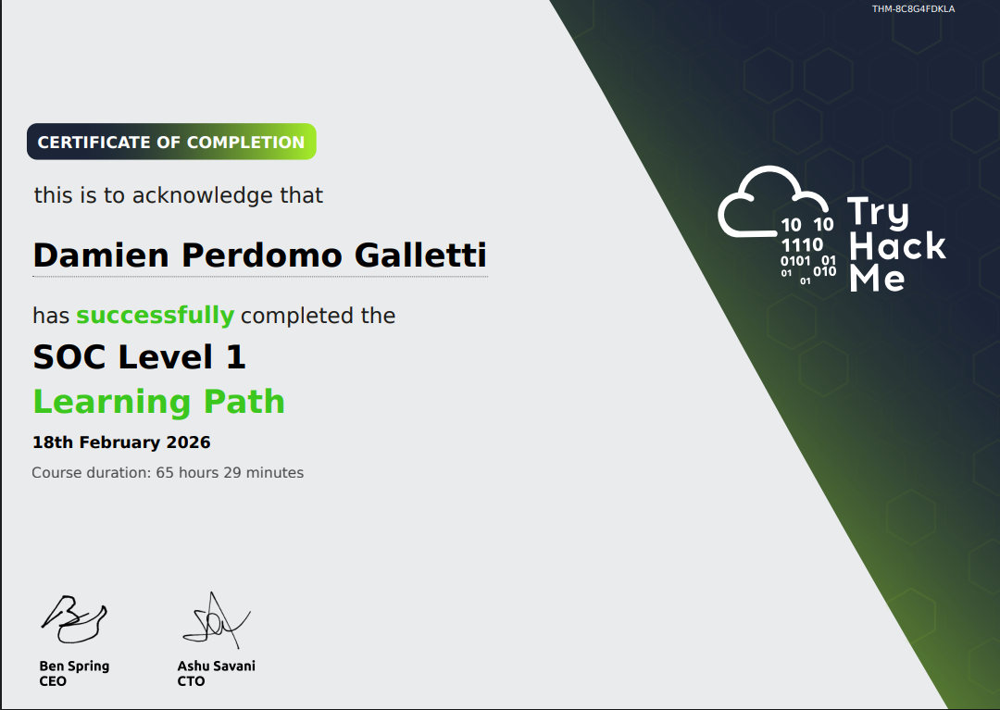
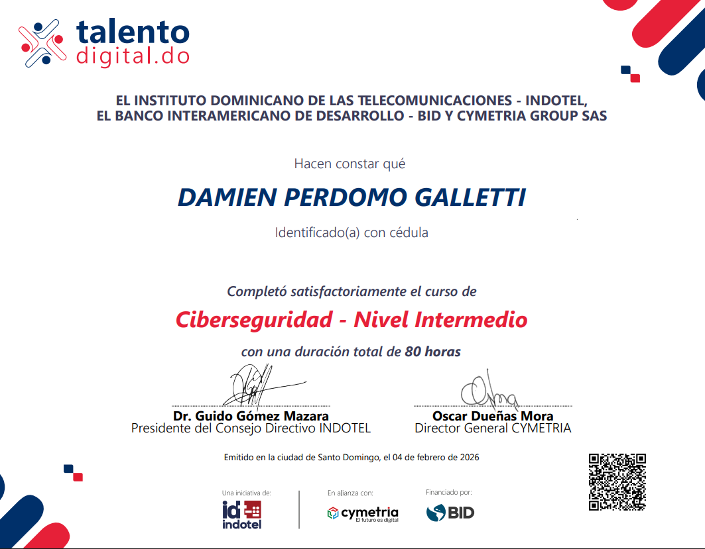

Damien Perdomo Galletti
Junior SOC Analyst | SIEM Monitoring | Alert Investigation | Incident Triage
Hands-on portfolio focused on simulated SOC investigations, SIEM log analysis, IOC enrichment, MITRE ATT&CK mapping, and structured incident documentation.
More about me
I am an entry-level cybersecurity professional focused on Blue Team operations and Security Operations Center (SOC) work. Through hands-on training environments, I have developed a practical approach to investigating alerts, reviewing system and security events, documenting findings clearly, and following structured workflows during simulated incident analysis. I am especially interested in defensive monitoring, evidence-based decision-making, and continuous improvement as I build toward a Junior SOC Analyst role.
Core SOC Capabilities
-
Alert Triage & Log Analysis
Review of security-relevant events and logs to identify suspicious activity, validate alerts, and support structured incident investigation.
-
Windows & Linux Investigation Support
Practical analysis of authentication events, process activity, and system behavior across Windows and Linux lab environments.
-
Python for Security Analysis
Basic Python used to support log parsing, data review, and investigation workflows in hands-on cybersecurity practice.
Key Highlights
Certificates

SOC Level 1 Certificate
TryHackMe · Defensive Security Training
Practical training focused on SOC workflows, alert investigation, log analysis, and defensive security techniques.

Google Cybersecurity Professional Certificate
Google / Coursera · 2025
Foundational cybersecurity training covering threat detection, incident response, security operations concepts, and SIEM analysis.

Intermediate Cybersecurity Program
INDOTEL / Inter-American Development Bank / Cymetria
Intermediate cybersecurity training program focused on defensive security concepts, cyber risk awareness, and foundational cyber defense practices.
SOC Investigation Reports
Simulated SOC alert investigations demonstrating incident triage, log analysis, IOC identification, and structured documentation.
Hands-On Investigations & Lab Evidence
Structured lab work and technical evidence demonstrating investigation workflows, defensive analysis, and practical cybersecurity skills.